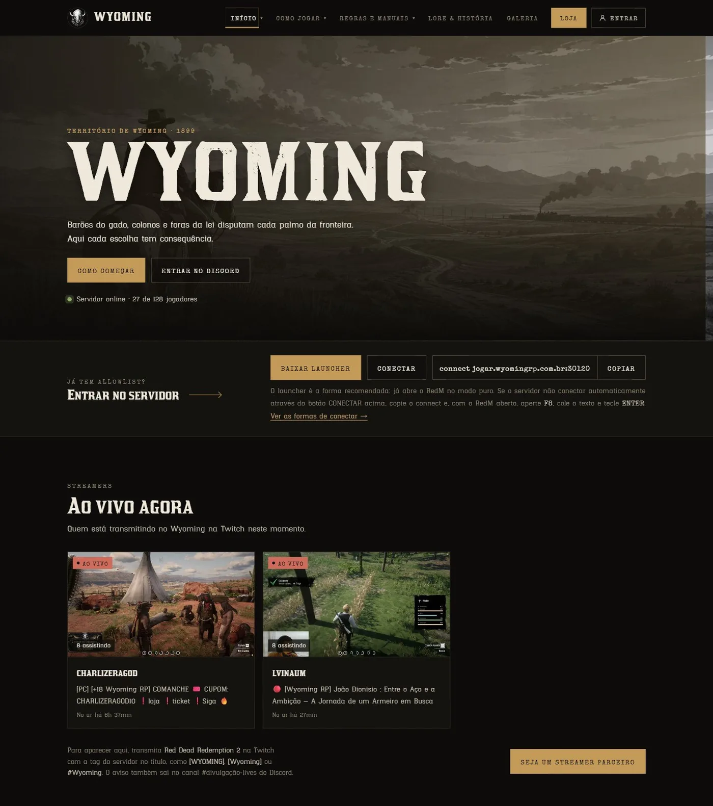
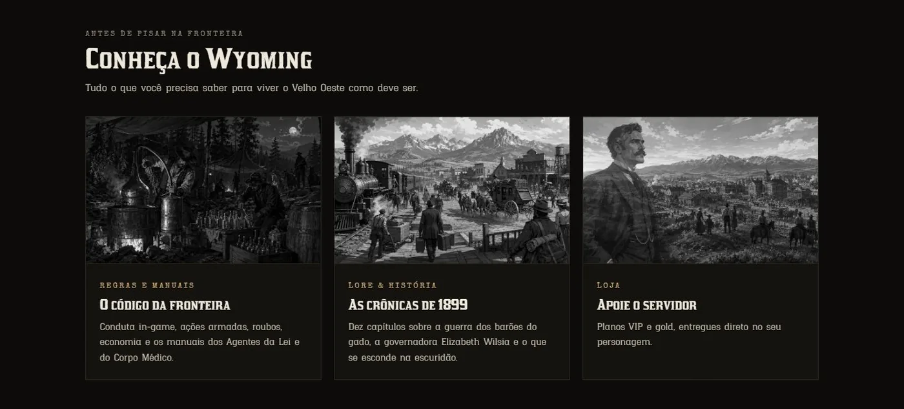
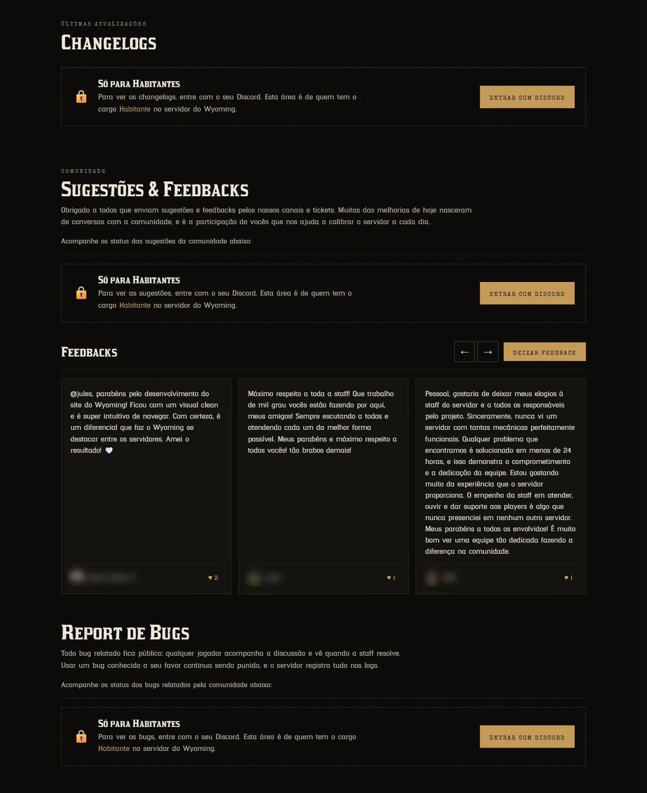
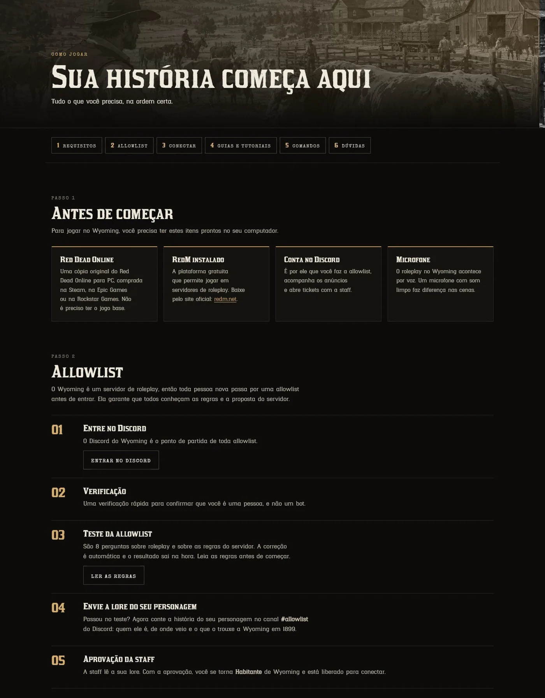
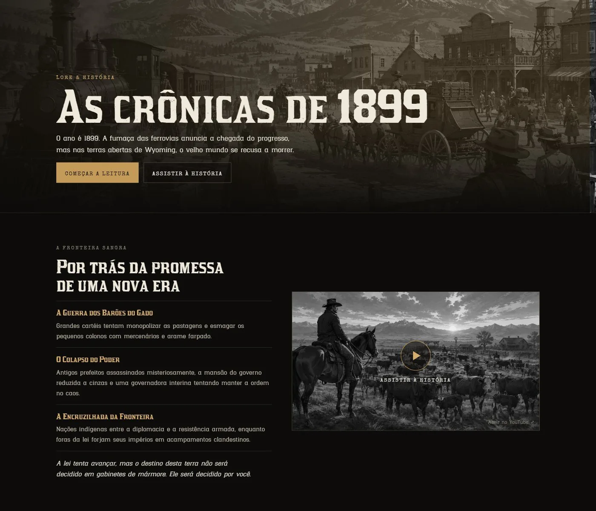
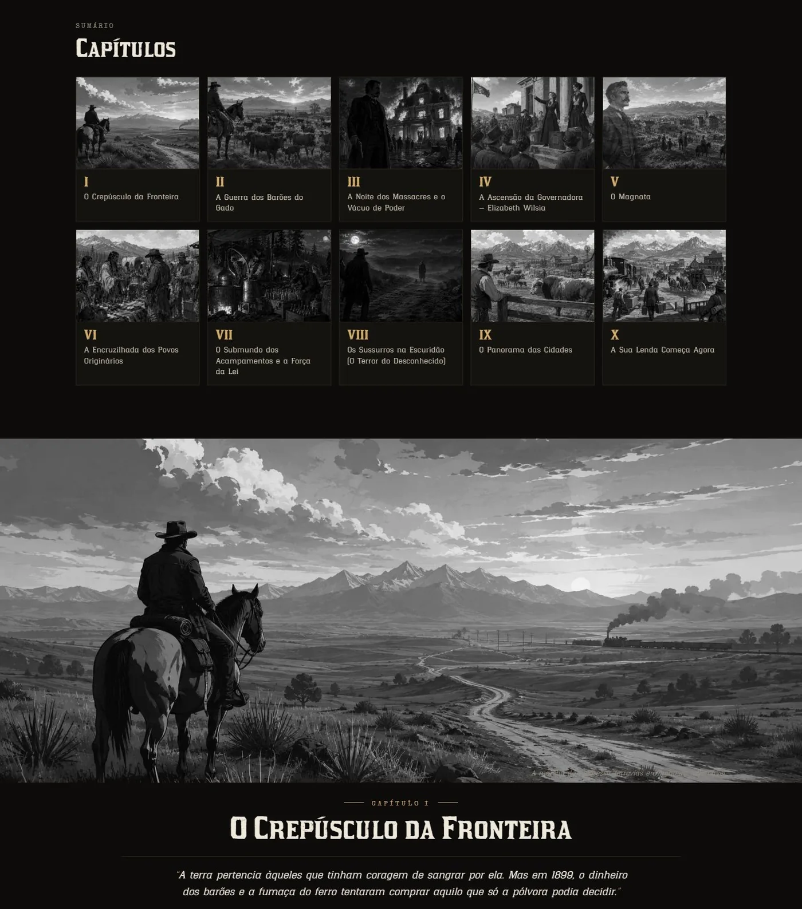
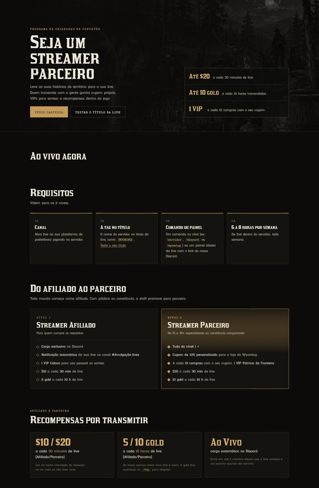
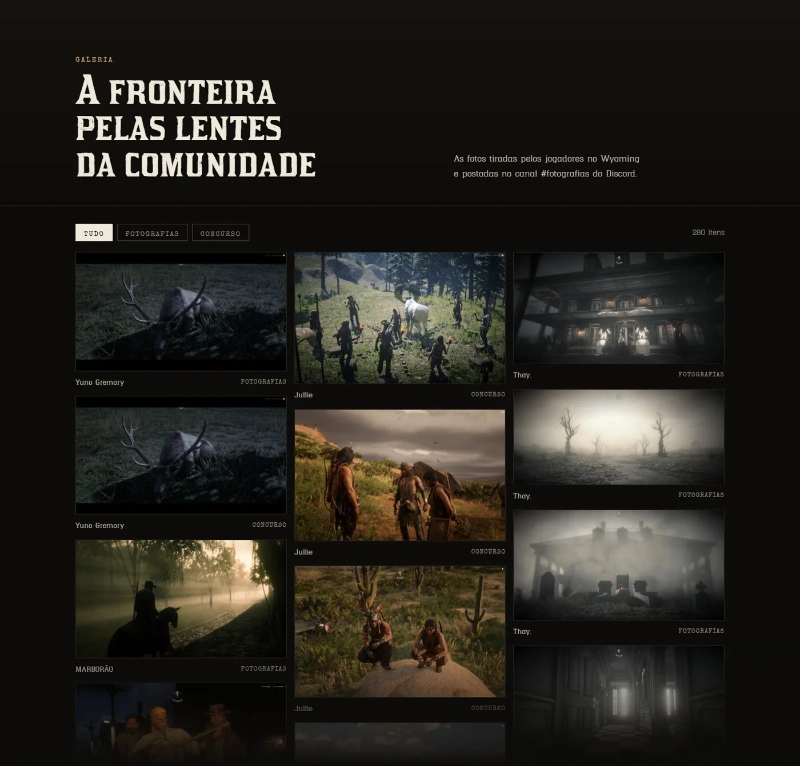
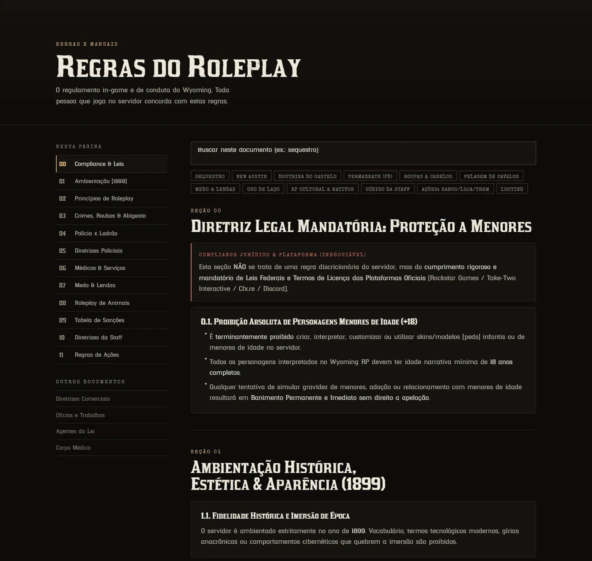

SITE · DESENVOLVIMENTO WEB
Wyoming.
servidor de roleplay · redm
O site oficial de um servidor de roleplay no RedM ambientado em 1899. Reúne o que antes ficava espalhado pelo Discord — como jogar, regras, lore, galeria, streamers e loja — com login pelo Discord, jogadores online em tempo real e sugestões, feedbacks e bugs públicos.
- CLIENTE
- Wyoming Roleplay
- ANO
- 2026
- ENTREGAS
- Website · Integração com Discord e servidor
- FERRAMENTAS
- VS Code · Claude








